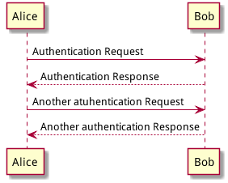
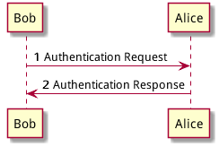
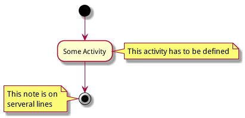

Table of Contents
- 1. 顺序图（Sequence Diagram）
- 1.1. 简单示例
- 1.2. 注释语句
- 1.3. 使用非字母的参与者名称（Use non-letters in participants）
- 1.4. 发送消息给自己（Message to Self）
- 1.5. 改变箭头的样式（Change arrow style）
- 1.6. 改变箭头的颜色（Change arrow color）
- 1.7. 消息序号（Message sequence numbering）
- 1.8. 标题
- 1.9. 图形图例（Legend the diagram）
- 1.10. 分割图形（Splitting diagrams）
- 1.11. 消息分组（Grouping message）
- 1.12. 消息注解（Notes on messages）
- 1.13. 一些其他的注解方式（Some other notes）
- 1.14. 使用 HTML 进行格式化（Formatting using HTML）
- 2. 用例图（Use Case Diagram）
- 3. 类图（Class Diagram）
- 4. 活动图（Activity Diagram）
- 4.1. 简单活动（Simple Activity）
- 4.2. 带标注的箭头（Label on arrows）
- 4.3. 改变箭头的方向（Changing arrow direction）
- 4.4. 分支（Branches）
- 4.5. 多分支（More on Branches）
- 4.6. 同步块（Synchronization）
- 4.7. 长文本的活动描述（Long activity description）
- 4.8. 注释（Notes）
- 4.9. 分区（Partition）
- 4.10. 图形标题（Title the diagram）
- 4.11. 皮肤（Skinparam）
- 4.12. 完整示例（Complete Example）
- 4.13. 活动图 Beta
- 4.14. 条件符号（Conditional）
- 4.15. 重复循环（Repeat Loop）
- 4.16. 条件循环（While Loop）
- 4.17. 并行处理（Parallel Processing）
- 4.18. 注解的文本样式（Notes）
- 4.19. 颜色（Color）
- 4.20. 完整示例（Complete Example）
1 顺序图（Sequence Diagram）
1.1 简单示例
顺序图用 -> , ->, <-, <- 来绘制参与者（Participants）之 间的消息（Message）。

1.2 注释语句
以单引号开始头行，即是一个单行注释。多行注释可以使用"/'"表 示注释内容的开始，然后使用"'/"来表示注释内容的结束。
申明参与者
申明参与者，可以使用 participant 关键词，也可以使用下面的参与者 分类关键词来申明参与者：
- actor
- boundary
- control
- entity
- database
不同的参与者类型，其图标也是不一样的。
使用 as 关键词可以为参与者起一个别名，这样在对引用长名的参与者时， 会方便很多。在参与者申明语句后行尾可以追加背景色的设置，只要把标准 的 HTML 颜色值 写在后面就行了。
1.3 使用非字母的参与者名称（Use non-letters in participants）
针对非字母的参与者名，我们可以使用双引号，同样也可以为比较长的名字 起个别名，方法同上使用 as 关键词。
使用上面的关键词来申明参与者，是一种显示申明；而采用引号来申明参与 者则是一种隐示申明方法，它不需要专门的位置去定义。
1.4 发送消息给自己（Message to Self）
一个参与者可以给自己发送消息，消息名如果需要有多行文本，可以用 \n 来表示换行。
1.5 改变箭头的样式（Change arrow style）
在用例图里可以通过以下方式来改变箭头的样式：
使用 \ 或 / 来替换 < 或 > 可以让箭头只显示上半部分或下半 部分。
重复输入箭头或斜杠（ >> // ），用来绘制空心箭头。
使用双横线 - 替代 - 可以用来绘制点线。
在箭头后面加个 o 可以在箭头前绘制一个圆圈。
使用 <-> 可用来绘制双向箭头。
1.6 改变箭头的颜色（Change arrow color）
要改变箭头的颜色，可以使用 HTML 颜色符号，参看下面的例子：

1.7 消息序号（Message sequence numbering）
关键词 autonumber 用来给自动的给消息添加上序号。

如果需要指定一个起始号码，可以直接在 autonumber 后面加个数字就行 了，如果要设置自增量，再在后面加一个数字就行了（autonumber start increment）。
我们也可以为序号指定数字格式，这个格式化的过程实际上是 Java 类 DecimalFormat 来执行的（0 表示数字， # 缺省补零位数）。
同样的，也可以使用一些 HTML 标签来控制数字的样式。
1.8 标题
要给图形加一个标题可以用 title 关键词来设置。
1.9 图形图例（Legend the diagram）
使用 legend 和 end legend 关键词可以设置图形的图例。图例可以设 为左对齐、右对齐和居中对齐。
1.10 分割图形（Splitting diagrams）
关键词 newpage 是用来把图形分割成几个图片的。每一个被分割出来的 图片可以看作是一个新的页面（new page），如果要给新的页面添加一 个标题，可以紧跟在关键词 newpage 之后来设置。
使用这个方法可以方便的在 Word 里把比较长的图形分别打印到几个不同的页 面上（有点分页符的概念）。
1.11 消息分组（Grouping message）
有时候可能需要对消息进行分组，那么可以使用下面的关键词来实现：
alt/else
opt
loop
par
break
critical
group, 这个关键词后面的文字会作为组名显示在图形上
上面的关键词后可以添加一些文本用来显示在头部（注：group 除外，因 为它后面的文本用来显示在组名称的位置）。在组嵌套组的结构里可以用关 键词 end 来关闭组或者说是表示一个组符号的结束符（类似 if/endif）。
1.12 消息注解（Notes on messages）
我们可能经常会在消息的左边或右边使用注解，要添加注解，只要使用 note left 或 note right 关键词就可以了。
1.13 一些其他的注解方式（Some other notes）
通过使用关键词 note left of，note right of 或 note over， 我们还可以把注解放置在与之相关的参与者的左边或右边，或下方。
通过改变注解的背景色，我们还可以高亮一个注解文本块。
如果要使用多行注解，可以使用关键词 end note 来表示注解的结束。
1.14 使用 HTML 进行格式化（Formatting using HTML）
我们可以使用少量的 HTML 标签来格式化文本：
<b> 加粗文本
<u> 或 <u:#AAAAAA> 或 <u:colorName> 用来加下划线
<i> 斜体
<s> 或 <s:#AAAAAA> 或 <s:colorName> 用来加删除线
<w> 或 <w:#AAAAAA> 或 <w:colorName> 用来加波浪线
<color:#AAAAAA> 或 <color:colorName> 用来设置文本颜色
<back:#AAAAAA> 或 <back:colorName> 用来设置背景色
<size:nn> 设置字体大小
<img src="file"> 或 <img:file> 用来添加图片，图片文件必须 是可以访问得到才行。
<img src="http://url/"> 或 <img:http://url/> 用来添加一个互 联网图片，同样的图片地址必须是可用的才行。
2 用例图（Use Case Diagram）
2.1 用例（Usecase）
用例可以用一对小括号括起来表示，也可以使用 usecase 关键词来定义。 用例也可以通过使用 as 关键词来设置别名，在建立关系的时候可以使用 别名。
2.2 参与者（Actors）
定义参与者时，可以把参与者的名称放在两个冒号的中间，也可以用 actor 关键词来定义参与者。同样参与着也可以使用别名。
2.3 示例
3 类图（Class Diagram）
3.1 示例 1
4 活动图（Activity Diagram）
4.1 简单活动（Simple Activity）
在活动图中，你可以使用 (*) 来表示活动开始点和结束点。使用 –> 来表示箭头。
4.2 带标注的箭头（Label on arrows）
缺省情况下，活动图的箭头是没有标注的。但我们可以通过方括号 [labels] 来设置标注，只要把它放在箭头定义的后面就可以了。
4.3 改变箭头的方向（Changing arrow direction）
我们可以使用 -> 创建一个水平箭头，也可以通过下面的方式来改变箭头 的方向：
-down-> 向下（这个是默认的，等同于 =–>=）
-right-> 向右
-left-> 向左
-up-> 向上
在描述箭头时，up|down|left|right 这几个单词的写法可以简化， 用单词开头的一个或两个字母来替换就行了，比如 -down-> 也可以写成 -d-> 或者 -do-> 。
4.4 分支（Branches）
在 PlantUML 里，我们可以使用 if/then/else 关键词来定义分支。
4.5 多分支（More on Branches）
直接给例子：
4.6 同步块（Synchronization）
同步块可以用“=== code ===”来表示。

一个小实例
4.7 长文本的活动描述（Long activity description）
在定义活动的时候，有时候需要用多行文字来描述这个活动，这时我们可以 在描述里添加换行符 \n，也可以使用少量的 HTML 标签。
以下是可以使用的 HTML 标签：
<b>
<i>
<font size="nn"> or <size:nn> to change font size
<font color="#AAAAAA"> or <font color="colorName">
<color:#AAAAAA> or <color:colorName>
<img:file.png> to include an image
针对较长文本描述活动，可以起一个较短别名（如："long text" as A1）， 在图形定义脚本中可以直接使用别名，参看下面的例子中的 A1。
4.8 注释（Notes）
PlantUML 可以通过在脚本里使用 note 来添加注释文本块。
note commands:
note left
note right
note top
note bottom
PlantUML 用上面列表里的命令来标注一个注释块的开始，然后用 end note 来标注注释块的结束。同时 note 命令也允许使用单行定义一个文本块， 详见下面的例子。

4.9 分区（Partition）
通过分区关键词 partition 可以定义一个分区，并且可以使用 HTML 的 颜色码或颜色名来设置分区的背景色。在你申明一个活动时，PlantUML 会自动 的把这个活动对象放置到最后使用的分区中。当然，也可以使用 end partitio 关闭分区定义。
4.10 图形标题（Title the diagram）
标题关键词 title 用来设置一个图形的标题文本，我们可以在 title 和 end title 两个关键词之间放置比较长的标题文本。
4.11 皮肤（Skinparam）
皮肤命令 skinparam 可以改变图形的颜色和字体。这些命令可以在以下 的位置中使用：
在图形定义里使用，
在包含的文件里使用，
在一个配置文件里使用，这个配置文件一般由命令行或 ANT 的 Task 来提供。
使用 skinparam activityShape octagon 命令可以把活动图形改成八角 形的。(好像没效果！)
4.12 完整示例（Complete Example）
4.13 活动图 Beta
Beta 版本的活动图简化了活动图的符号定义，从 V7947 这个版本开始，PlantUML 就开始引入了一些简化写法，当然到目前（20140627）为止还不是 很完善，但这个版本里的一些简化写法已经是 PlantUML 后续版本的发展方向。
下文中将会用几个简单的示例来介绍 Beta 版活动图的新功能，有兴趣的朋友 也可以试一下，在使用新的写法之前需要把 GraphViz 更新到最新版本。
关于更多的 PlantUML 版本更新信息可以参考官网页面（What's New？）
简单活动（Simple Activity）
在这个例子里，活动元素从一个 : 开始，然后到一个 ; 结束。 开始和结束符号，可以用 start 和 end 两个关键词来表示。之前版 本的开始和结束符都是用同一个符号 (*) 来表示的，个人觉得新的写法 逻辑更清晰，代码可读性更高。
至于更多的文本格式，大家可以参考：Creole engine
4.14 条件符号（Conditional）
和之前一样，还是使用 if，then 和 else 关键词，但分支条件的 标签 Labels 可以直接写在关键词 then 和 else 的后面，并用小括 号括起来就可以了（如： (Labels) ）。
在新版本里除了使用 else 外，还新加了一个 elseif 关键词，有了这 个语法，我们就可以绘制一系列条件的活动图。
4.15 重复循环（Repeat Loop）
通过 repeat 和 repeat while 关键词可以创建循环结构的图形。
4.16 条件循环（While Loop）
“条件循环”和上面的“重复循环”不太一样，上面的“重复循环”是先执行一次 循环体里的内容，然后再执行断言条件，看是否重复执行循环体；而条件循 环则将断言放到了最前面，因此它是先判断是否满足条件再执行循环体里的 内容。
要创建条件循环结构的图形可以通过使用 while 和 end while 两个关 键词来实现。如果要给条件分支加上标注，可以在 while 条件后加上一 个 is 关键词，然后用小括号括上要标注的内容；在 end while 后可 以直接用小括号括上要标注的内容。
4.17 并行处理（Parallel Processing）
fork，fork again 和 end fork 三个关键词用来表示并行处理结 构。
4.18 注解的文本样式（Notes）
注解里的文本样式是通过 Creole wiki syntax 来实现的。关于 Creole 引擎, 大家可以参考维基百科上的介绍。
4.19 颜色（Color）
为活动元素指定背景色可以直接在活动开始标记 : 前加上颜色描述符：
4.20 完整示例（Complete Example）